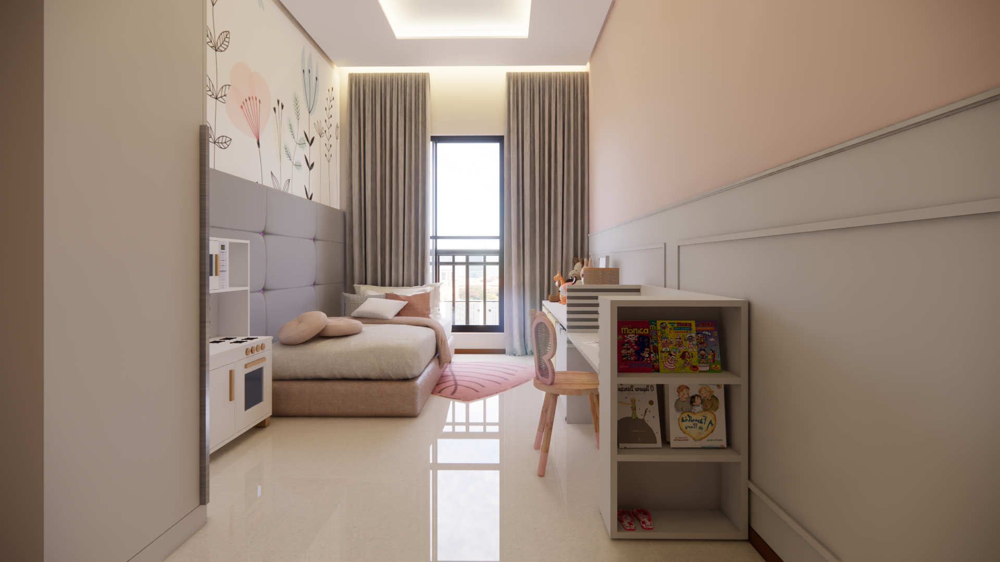

Cobertura 116 Sul
Área coletiva com gourmet, academia e convivência mais confortável.
A cobertura coletiva da 116 Sul precisava acolher usos diferentes sem virar um espaço dividido demais. Gourmet, academia e circulação tinham que funcionar juntos, com conforto e privacidade.
O projeto organiza fluxos, aproxima a área social e cria uma experiência coletiva mais natural. Um lugar para encontros, treino e permanência, não apenas passagem.

Integrar gourmet e academia sem misturar usos que pedem níveis diferentes de privacidade.
Definir circulação clara, preservar áreas de permanência e deixar os encontros acontecerem com conforto.
A cobertura ganha função, ritmo e uma presença mais viva dentro do condomínio.
Outras formas de viver o espaço
Cada projeto revela uma rotina diferente. Volte para a seleção e percorra outros caminhos da Indesigns.